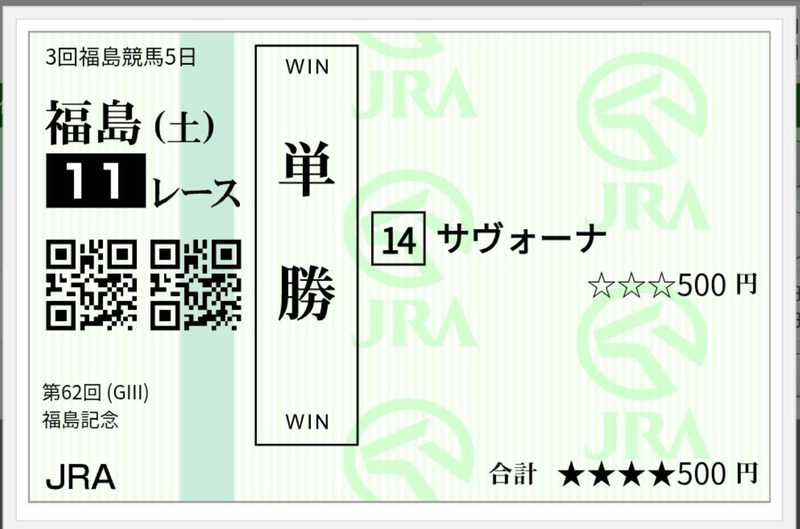
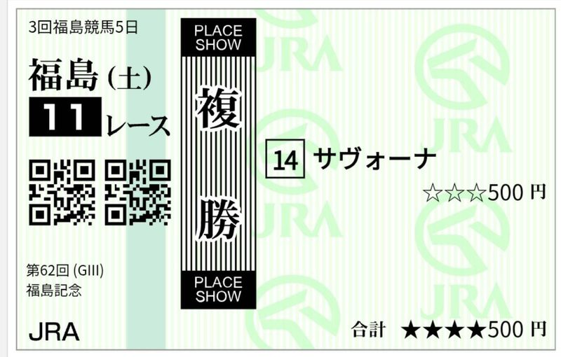

当日予想
今週から、中央競馬は週に1つだけ勝負レースを決めて買う形にしました。シミュレーションで検証したA〜E作戦で候補を洗い出し、一番の1頭を勝負レースにします。
2026/11/21(土) 福島11R 福島記念（GⅢ）
15:20発走、芝2000mです。
◎14 サヴォーナ 横山武史
１４ 単勝 ５００円
１４ 複勝 ５００円
該当する角度はC（鞍上強化）です。前走・京都大賞典の斎藤新から横山武史への乗り替わりは明確な格上げで、2走前の新潟記念（GⅢ）では4着（0.2秒差）と、同クラスでの好走実績もあります。さらに「忘れられた実力馬」にも当たります。今年4月に同じ福島・芝2000mの福島民報杯を勝っており、前走の17着は距離2400m・格上挑戦で説明がつく凡走です。実績を残した条件への回帰で、人気と実力の乖離が今週一番大きいと見ました。金曜時点の予想では単勝11.9倍・6番人気です。


＜本年成績＞
中央 213戦26勝 291,400円→181,380円 -110,020円 62%
地方 13戦4勝 13,000円→14,750円 +1,750円 113%
合計 226戦30勝 304,400円→196,130円 -108,270円 64%
払戻"金"投資 108,020円→92,487円 -15,533円 -14.38%
その他の予想（予想だけ・買っていません）
福島11R 福島記念 ◎16 レイニング A.プーシャン 単勝 ５００円／複勝 ５００円（仮想）
角度A（末脚の隠れた速さ）の暫定該当です。前走・毎日王冠（GⅡ）で後方から追い込んで4着、上がり3Fは32.9秒でした。GⅡで好走した馬がGⅢのハンデ戦に降りてくる形です。金曜時点の予想では単勝8.9倍・4番人気です。
11/22(日) 京都11R マイルチャンピオンシップ（GⅠ）15:40発走、芝1600m
◎14 スターアニス 松山弘平 単勝 ５００円／複勝 ５００円（仮想）
角度Aの暫定該当です。前走・スプリンターズS（GⅠ）は1番人気で4着（0.2秒差）。マイルのGⅠを2勝している実力で5番人気はやや過小評価に見えますが、距離延長が焦点です。金曜時点の予想では単勝9.3倍・5番人気です。
なお、11/21 京都11R シトリンステークスのセンツブラッドは、角度Cには該当しましたが、金曜時点で予想オッズが公表されておらず、帯域（単勝3.0〜15.0倍・3〜8番人気）に入るか判定できなかったため、候補に入れていません。福島記念のマリアイリダータ（1番人気・角度C）とフォルテアンジェロ（2番人気・角度A暫定）は、角度には該当しましたが人気の帯域の外でした。11/23の東京スポーツ杯2歳ステークスは出馬表の発表が土曜日のため、まだ判定できていません。候補があれば追記します。